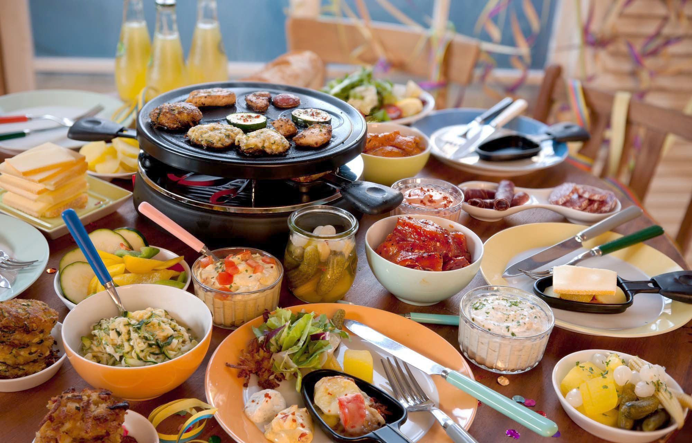

Швейцария
География
Швейцария расположена в сердце Западной Европы. На севере она граничит с Германией, на востоке – с Австрией и Лихтенштейном, на юге - с Италией и на западе – с Францией. Швейцария – одна из самых маленьких стран мира: её общая площадь 41 285 км2. Максимальная протяженность с севера на юг 220 км, с запада на восток – 348 км.
Швейцария собрала внутри своих границ уникальное разнообразие природы и ландшафта. Самая низкая точка находится на берегу озера Лаго-Маджоре в Тичино (194 м н.у.м.). Вечный снег покрывает вершины гор, 48 из которых высотой 4000 м и выше. Пик Дюфур (4634 м) в кантоне Валлис – высшая точка Швейцарии. Швейцария богата водными ресурсами. На ее территории сосредоточено 6% запасов пресной воды Европы. Отсюда берут свои истоки реки Рона, Рейн и Инн, впадающие в бассейны Средиземного, Северного и Черного морей. Швейцария насчитывает свыше 1500 озер. Женевское озеро на границе с Францией - самое большое в Западной Европе.
Ледники занимают 3% территории Швейцарии. Самый крупный долинный ледник - Алетшский глетчер (23 км).
Климат
Климат Швейцарии более мягкий, чем в Москве: теплые зимы, обычно погода в районе 0-7 градусов тепла, с редкими понижениями до -2 и меньше, ниже 7-10 градусов морозов обычно не бывает. Весна достаточно ранняя, но нестабильная. В конце марта часто выпадает снег (на 1-2 дня), при этом многие деревья зеленые. Летом жара бывает редко, на дожди бывают частенько. Осень достаточно теплая, в октябре еще часто бывает +15 градусов.
На западе страны, в районе Женевы, частенько на 1 — 2 градуса потеплее, чем в Цюрихе.
Особенно хорошо на юге страны, в италоязычном кантоне Тичино (Лугано, Локарно, Беллинцона, Аскона): обычно там на несколько градусов теплее (особенно это заметно осенью, когда в Цюрихе уже совсем холодно, +7, а в Тичино еще +14) и солнечнее!!! Намного солнечнее! Если Вы приехали в Швейцарию и обещают дожди, проверьте погоду в Тичино, там скорее всего будет ясно и солнце.
Население
Население Швейцарии составляет примерно 8 447 818 человек.
Языки Швейцарии:
Немецкий язык (64 %),
Французский язык (19 %),
Итальянский язык (8 %),
Романшский язык (менее 1 %)
До 1975 года численность населения Швейцарии росла как за счет естественного прироста, так и за счет иммиграции. Затем приток иностранных рабочих снизился.
Доля населения в возрасте до 15 лет — 23,4 %, выше 60 — 15,1 %.
В целом страна заселена крайне неравномерно. В среднем плотность населения составляет 154 человека на 1 кв. км, но на Швейцарском плато и в северо-восточной части страны, где сосредоточено почти 3/4 всех жителей страны, она достигает 250 человек на 1 кв. км. В горных, центральных и южных частях Швейцарии (за исключением кантона Тичино), а также на востоке население очень редкое — от 25 до 50 человек на 1 кв. км.
На Швейцарском плоскогорье расположены крупнейшие города. Экономически активное население — 2995,5 тыс. чел.(1970). 77,7 % населения живёт в городах, население в Альпах сокращается.
Пенсионный возраст: мужчины — 65 лет, женщины — 62 года.
Большая часть активного населения занята в сфере услуг. Большую роль играет туризм. Основное направление сельского хозяйства — молочное животноводство (в Альпах — отгонное). Материальная и духовная культура имеет много местных вариантов.
Швейцарская Кухня
 При словосочетании «Швейцарская кухня» обычно в уме возникает сыр и шоколад. Швейцарские сыры, в частности, Emmentaler, Gruyère, Vacherin и Appenzeller, — наиболее известные швейцарские товары. Самые популярные сырные блюда — фондю и раклетт. Оба эти блюда были изначально региональными, но постепенно распространились по всей Швейцарии.
Rösti (Рошти) являются популярным картофельным гарниром, который едят по всей Швейцарии. Первоначально их ели на завтрак, но их заменили мюсли, которыми теперь любят завтракать. В Швейцарии мюсли называют «Birchermüesli» («Birchermiesli» в некоторых регионах). На завтрак и ужин многие швейцарцы любят нарезанный хлеб с маслом и вареньем. В Швейцарии представлен очень широкий выбор хлеба, который обычно печется прямо в магазине. Есть хлеб с добавлением всевозможного вида семечек и отрубей, бывает даже хлеб с луком! Хлеб и сыр являются популярным блюдом на ужин.
Tarts и quiches также относятся к традиционным швейцарским блюдам. Tarts, в частности, едят с разного рода добавками, от сладких яблок до лука.
Одним из примеров «региональных блюд» является zürigschnätzlets-тонкие полоски телятины с грибами в сливочным соусом, подаются с rösti.
Замок Оберхофен
Замок Оберхофен по праву считается одним из главных памятников истории и архитектуры Швейцарии. На него ежегодно приезжают посмотреть сотни тысяч туристов, которых привлекает необычный, можно даже сказать, «сказочный» стиль сооружения и богатейшее внутреннее убранство. Этот великолепный замок-дворец находится на берегу живописного Тунского озера. К слову, Оберхофен довольно часто изображали на своих холстах самые известные художники. Согласно официальной версии история замка Оберхофен начинается с 1130-го года. Однако современные историки не совсем согласны с этим мнением и говорят о том, что «замок на озере» появился несколько позже. Дело все в том, что в летописях указывается 1130-й год, как год основания монастыря, который был возведен в полукилометре от территории, где сейчас возвышается сказочный Оберхофен. Монастыри в те далекие времена часто строили не только для монахов, возносящих свои молитвы к богу. Чаще всего рядом с кельями священников располагались казармы, и монастырь представлял собой что-то вроде «слаженного тандема» священного места и фортификационного сооружения. Денег у монахов было немного, если отбросить, конечно же, женский монастырь Фраумюнстер, поэтому они часто и заключали договора с воинскими частями, охранявшими какую-либо стратегически важную точку. От монастыря-крепости в наши дни почти ничего не осталось, а если быть предельно точным, то не осталось даже руин: место, где ранее стояла крепость-монастырь можно узнать только по возвышенности да глубокому рву, который ранее был неприступным для войск неприятеля.